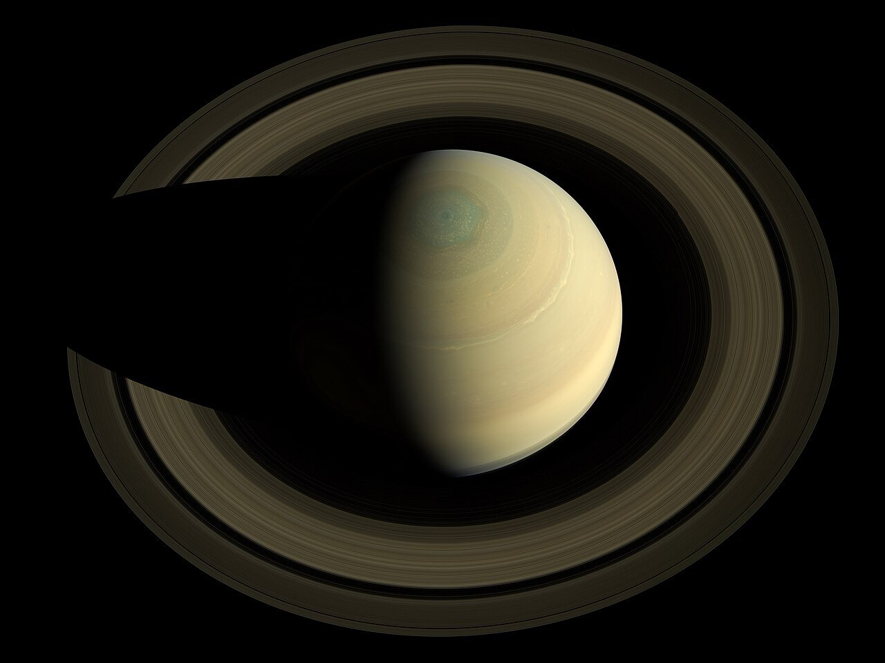
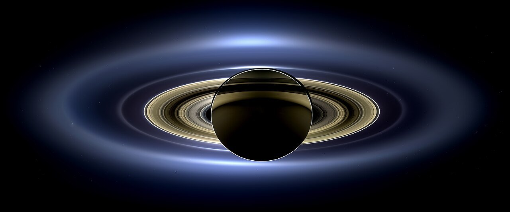
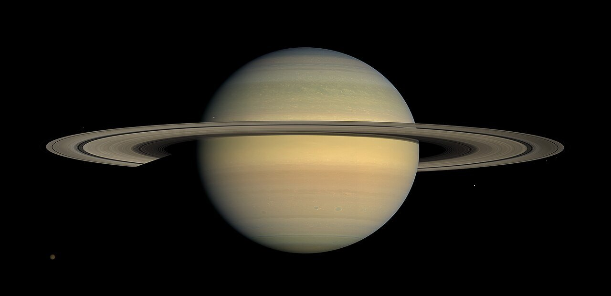
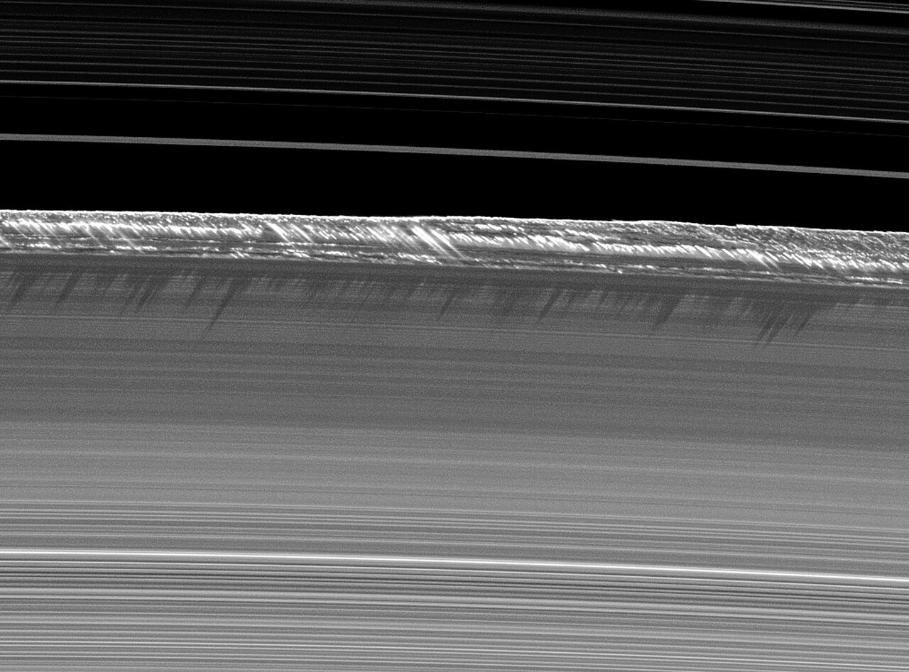
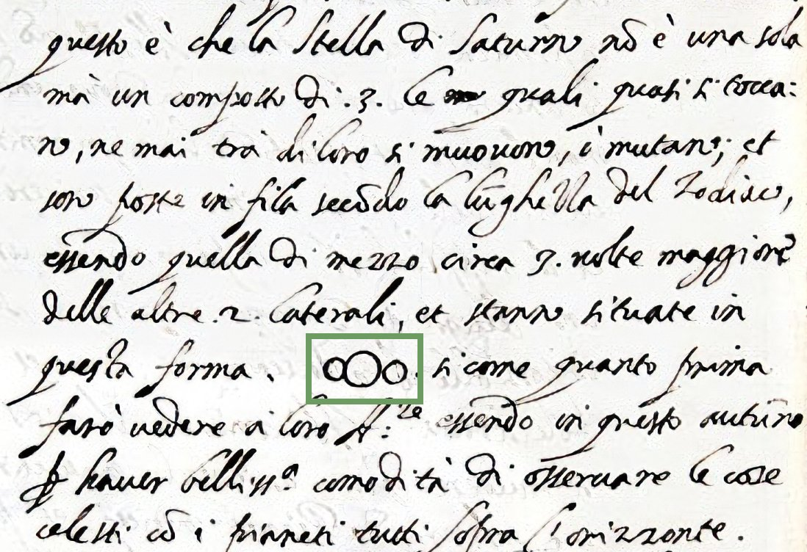
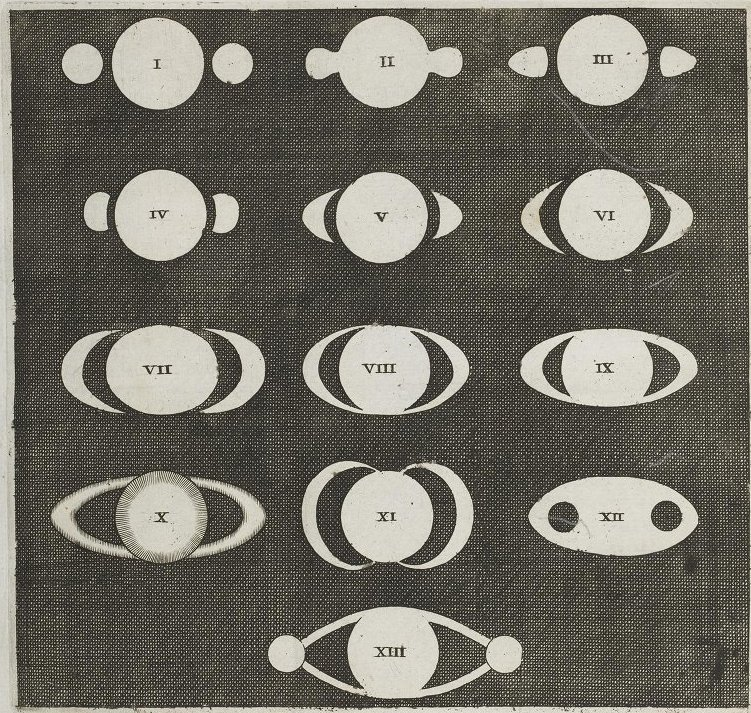
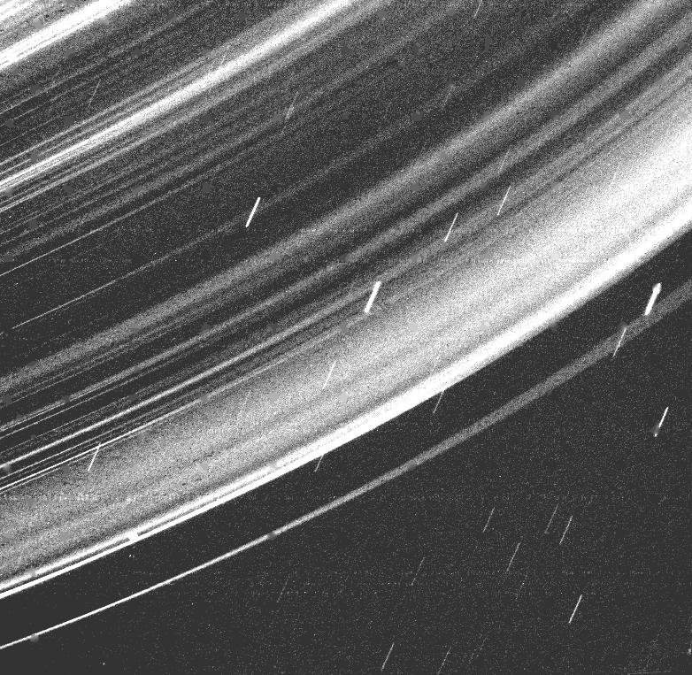
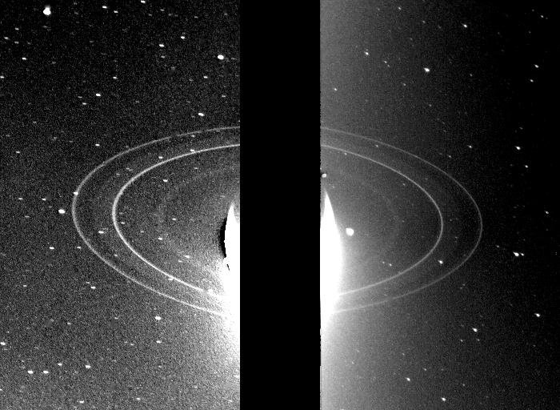

地球からはるか遠く、太陽から見て土星の裏側、2013年7月19日。探査機カッシーニは土星の影に入り、太陽を背にした土星と、遠くの地球をふり返って撮影しました。同じ日、NASAの呼びかけで、世界中の人が土星の方角へ手を振り、40か国から1,400枚以上の写真が寄せられました。
影の側から見ると、輪は太陽の光を受けてほのかに輝き、何重もの縞に分かれて見えます。望遠鏡でのぞけば、土星は輪ですぐにそれとわかる星です。板のように見えるあの輪は、いったい何でできているのでしょうか。

1枚の板に見える土星の輪。その正体は、ほとんどが氷でできた無数のかけらです。輪の名前と大きさ、厚さの図、そして輪の年齢をめぐる最新の研究から、輪の素顔をのぞいてみませんか。
地球からはるか遠く、太陽から見て土星の裏側、2013年7月19日。探査機カッシーニは土星の影に入り、太陽を背にした土星と、遠くの地球をふり返って撮影しました。同じ日、NASAの呼びかけで、世界中の人が土星の方角へ手を振り、40か国から1,400枚以上の写真が寄せられました。
影の側から見ると、輪は太陽の光を受けてほのかに輝き、何重もの縞に分かれて見えます。望遠鏡でのぞけば、土星は輪ですぐにそれとわかる星です。板のように見えるあの輪は、いったい何でできているのでしょうか。

輪の正体は、ほとんどが水の氷でできた、ちりのような細かい粒から家ほどの塊までの無数のかけらです。直径は約27万kmもあるのに、厚さは多くの場所で10メートルほど。しかも、土星よりずっと後にできたのかもしれません。
遠くから見ると、土星の輪はレコード盤のような1枚の板に見えます。けれど実際は、大小さまざまな氷のかけらが、1つひとつ土星のまわりを回っている集まりです。月が地球のまわりを回るのと同じように、土星の重力に引かれながら回り続けています。
かけらの大きさは、目に見えないほど細かい粒から、家ほどの塊まで。NASA（アメリカ航空宇宙局）によると、ごく一部には山ほどの大きさのものもあります。成分は、ほとんどが水の氷です。
輪には、見つかった順にアルファベットの名前がついています。明るく目立つのは、内側からC環・B環・A環の3本。B環とA環のあいだには、幅4,700〜4,800kmほどの暗いすき間「カッシーニの空隙（くうげき）」があります。その外側には、細いF環や、さらに淡いG環・E環が広がっています。

まず、大きさを見てみましょう。明るい主な輪の外側の縁は、土星の中心から約13万7,000km。直径にすると約27万kmで、地球を21個ほど並べた長さです。地球から月までの距離の、約7割にあたります。
ところが厚さは、多くの場所でわずか10メートルほど。3階建ての建物くらいしかありません。厚めに見積もった値でも1kmほどです。この比率をコピー用紙（厚さ0.1ミリ）に当てはめると、直径約2.7kmもの、とてつもなく大きな紙の円盤になります。
なぜ、これほど薄いのでしょうか。かけらどうしは回りながら何度もぶつかり、そのたびに上下にはねる動きが少しずつ弱まります。その結果、かけらは土星の赤道の上に、平たく並んでいくと考えられています。
薄すぎるので、輪を真横から見ると、ほとんど見えなくなります。土星が約29年かけて太陽のまわりを1周するあいだに、地球から輪が真横に見える時期が2回めぐってきます。このことが、昔の天文学者たちを大いに悩ませました。

輪の正体がわかるまでには、長い時間がかかりました。1610年、自作の望遠鏡で土星を見たイタリアのガリレオ・ガリレイは、土星は1つの星ではなく、3つの星がくっついていると手紙に書きました。輪の両端が、丸いこぶのように見えたのです。のちに彼は、それを土星の「耳」と呼んでいます。
ところが1612年、その「耳」が消えてしまいます。ちょうど地球から輪が真横に見える時期でした。ガリレオは「なんと言えばいいのかわからない」と、とまどいを書き残しています。
謎を解いたのは、オランダのクリスティアーン・ホイヘンスです。1655年、より性能のよい望遠鏡で観察し、土星は、どこにも触れていない薄く平らな輪に囲まれていると考えました。答えはまず暗号の文で発表し、1659年の本『土星の体系』で種明かしをしています。


1675年には、イタリア生まれの天文学者ジョヴァンニ・カッシーニが、輪の中の暗いすき間を見つけます。これが「カッシーニの空隙」です。ただ、輪がかたい1枚の板なのか、つぶの集まりなのかは、まだわかりませんでした。
答えを出したのは、イギリスの物理学者ジェームズ・クラーク・マクスウェルです。1859年、かたい板の輪では安定していられず、いずれ壊れてしまうことを計算で示し、輪は無数の小さなつぶの集まりだと結論しました。
その考えは、1895年に観測で確かめられます。輪からはね返る光を調べると、輪の場所ごとに回る速さがちがっていたのです。1枚のかたい板なら、こうはなりません。
そして1997年、その名をとった探査機カッシーニが打ち上げられ、2004年から13年間、土星を回りながら輪を調べました。最後の年には、土星と輪のあいだの幅2,400kmほどのすき間を22回くぐり抜け、輪の重さを詳しく測ったのです。
土星そのものは、約45億年前に太陽系ができたころに生まれたと考えられています。では、輪も同じくらい古いのでしょうか。手がかりになるのは、輪の氷の「きれいさ」です。
宇宙からは、岩石の細かいちりが絶えず降ってきます。古い輪ほど、ちりをかぶって黒っぽく汚れているはずです。2023年、コロラド大学などのチームは、カッシーニが13年かけて集めたちりのデータから、輪の年齢は1億〜4億年ほどと見積もりました。
一方、2024年には日本とフランスの研究チームが、別の見方を発表しました。ちりは高速でぶつかると蒸発し、ほとんど輪に残らないという計算です。それなら、きれいに見える輪が、実は土星と同じくらい古い可能性もあります。輪の年齢は、まだ決着がついていません。
若いにせよ古いにせよ、輪は土星だけのものではありません。1977年に天王星、1979年に木星、1989年には海王星でも、輪がはっきりと確かめられました。ただ、どれも暗くて細く、太陽系で土星のように明るく大きな輪をもつ惑星は、ほかにありません。


輪をすべて集めた重さ。直径約400kmの衛星ミマスの、4割ほどしかないカッシーニの観測（Iess ほか、2019年）。Wikipedia 英語版「Rings of Saturn」
輪の成分のうち、水の氷がしめる割合Wikipedia 英語版「Rings of Saturn」
B環の外側の縁にそびえる盛り上がりの高さ。ふつうの厚さの約250倍NASA/JPL（PIA11668、2009年）
輪のかけらは、永遠に回り続けるわけではありません。太陽の紫外線などで電気を帯びた細かい氷の粒は、土星の磁場（磁石の力がはたらく範囲）に沿って、雨のように土星へ降っています。NASAはこれを「リング・レイン（輪の雨）」と呼び、30分ごとにオリンピックのプール1杯分の水が降っていると見積もりました。
この雨だけで、輪は3億年以内に消える計算です。輪から土星の赤道へ直接落ちていく分も合わせると、残りは1億年未満という見積もりです（2018年、NASAなど）。木星や天王星、海王星にも、昔は大きな輪があったという見方もあります。輪のある土星は、宇宙の長い歴史の中では「今だけ」の姿なのかもしれません。
次に土星の写真を見かけたら、あの輪が少しずつ土星に降りつづけていることを思い出してみてください。私たちは、たまたま輪が見られる時代に居合わせているのです。